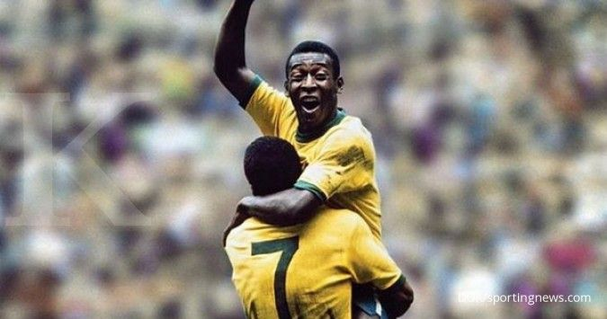

jeugd
DPelé, geboren als Edson Arantes do Nascimento op 23 oktober 1940 in Três Corações, Brazilië, groeide op in moeilijke omstandigheden. Zijn vader, João Ramos do Nascimento, was een voetballer, maar het gezin had beperkte middelen. Pelé's liefde voor voetbal ontstond op straat, waar hij met een zelfgemaakte bal van sokken en kranten speelde. Op 11-jarige leeftijd trad Pelé toe tot de jeugdacademie van Santos FC. Zijn uitzonderlijke vaardigheden waren al snel duidelijk, en op 15-jarige leeftijd maakte hij zijn debuut voor het eerste team van Santos. Pelé werd de jongste doelpuntenmaker in de geschiedenis van het Braziliaanse nationale team op 16-jarige leeftijd. Het hoogtepunt van Pelé's jeugd kwam tijdens het WK van 1958 in Zweden, waar hij als 17-jarige de jongste doelpuntenmaker en winnaar van de Gouden Bal werd. Hij scoorde in de finale tegen Zweden en leidde Brazilië naar de overwinning. Pelé's ongeëvenaarde doelpuntenproductie, balcontrole en snelheid maakten hem wereldwijd beroemd, en hij werd beschouwd als de beste voetballer ter wereld. Pelé's jeugdjaren vormden de basis voor een indrukwekkende carrière, die zou voortduren met successen bij Santos FC en later bij clubs als New York Cosmos. Zijn impact op het voetbal en zijn bijdrage aan het Braziliaanse team maken hem een van de grootste voetballers aller tijden.
clubs
Pelé, de legendarische Braziliaanse voetballer, speelde gedurende zijn carrière voor enkele opmerkelijke clubs. Zijn langste periode was bij Santos FC in Brazilië, waar hij tussen 1956 en 1974 uitgroeide tot een icoon. Met Santos won hij talloze nationale en internationale titels, waaronder de Copa Libertadores en de Intercontinental Cup. In 1975 maakte Pelé een opvallende overstap naar de New York Cosmos in de Verenigde Staten, waar hij een pionier werd voor de groei van het voetbal in het land. Hij speelde voor de Cosmos tot zijn officiële pensionering in 1977, waarmee hij zijn indrukwekkende carrière afsloot. Pelé's clubcarrière wordt gekenmerkt door zijn langdurige toewijding aan Santos en zijn rol in het bevorderen van het voetbal in de Verenigde Staten met de Cosmos, waarmee hij zijn onuitwisbare stempel drukte op de wereldwijde voetbalgeschiedenis.